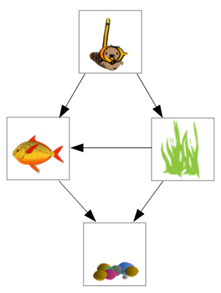
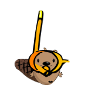
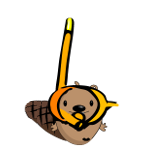

Solution
En observant l'aquarium, on note que :
- Castor est en partie recouvert par les algues et par le poisson, donc Castor a été collé avant les algues et avant le poisson.
- Les algues sont en partie recouvertes par le poisson et par les cailloux, donc les algues ont été collées avant le poisson et les cailloux.
- Le poisson est en partie recouvert par les cailloux, donc le poisson a été collé avant les cailloux.
Ces observations nous permettent de déduire que les autocollants ont été collés dans l'ordre suivant :
C'est de l'informatique

Dans ce sujet, il fallait trouver un ordre qui respecte un certain nombre de contraintes. Le placement d'une image par dessus une
autre sur le dessin implique une contrainte du type "a été collé avant". L'ensemble des contraintes forme un « graphe », comme représenté
ci-contre, où chaque flèche correspond à une contrainte et part de l'image qui a été collée en première.
Trouver un ordre qui est compatible avec un graphe est ce que l'on appelle un « tri topologique » des sommets du graphe. Il s'agit d'un problème classique d'algorithmique. Dans cet exemple, il n'y avait qu'un seul ordre possible, mais pour des graphes plus complexes,
il peut y en avoir plusieurs.
Au contraire, lorsque le graphe contient un cycle, par exemple si le poisson recouvre
les algues, qui recouvrent les cailloux, qui recouvrent le poisson, aucun ordre n'est possible. Le tri topologique ne s'applique qu'aux graphes sans cycles, que l'on appelle les graphes « acycliques ».
 
